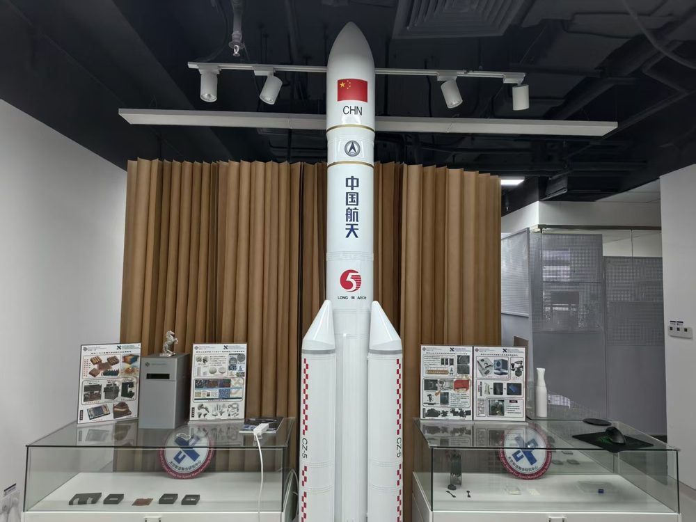
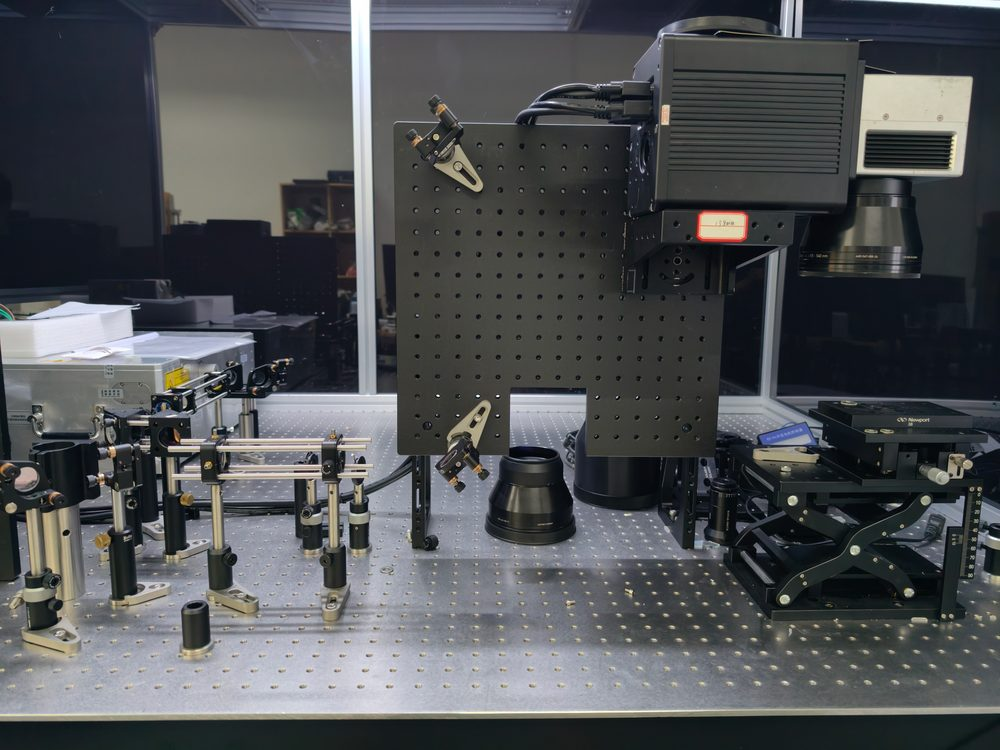
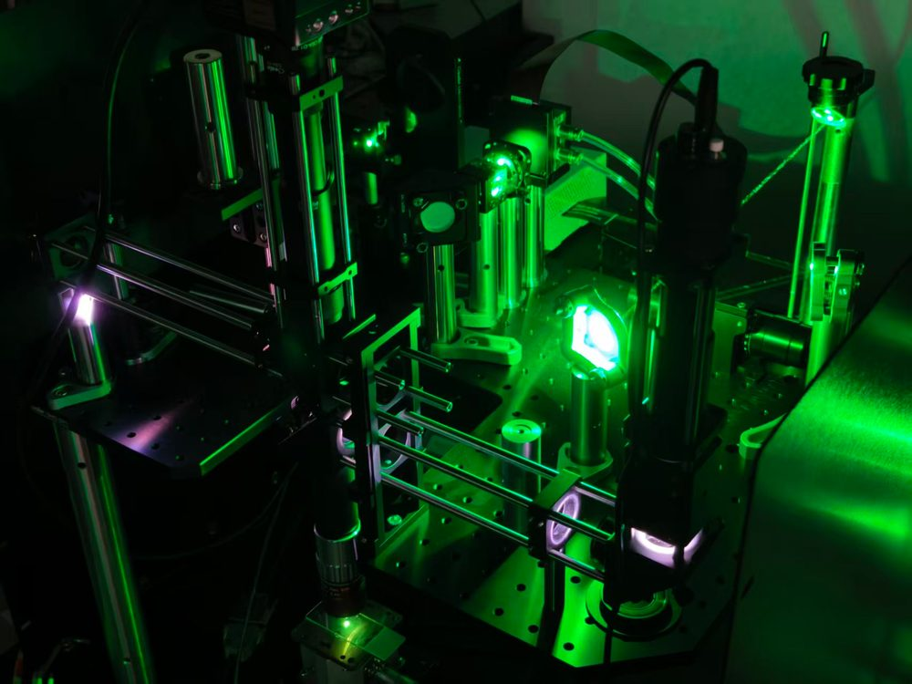
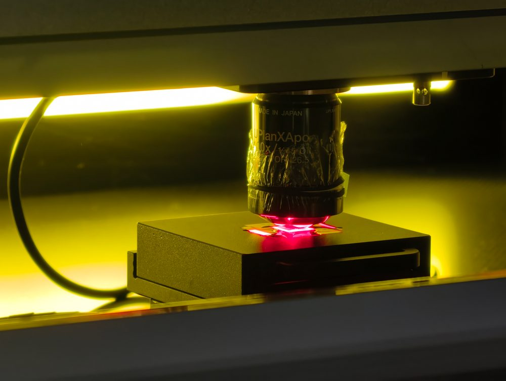
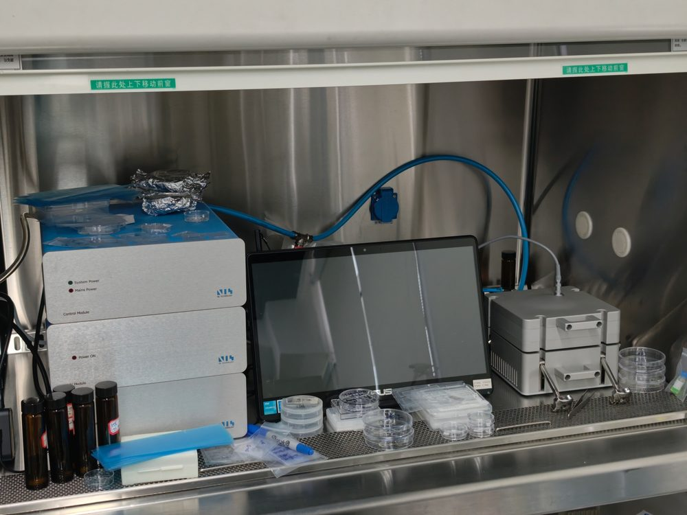
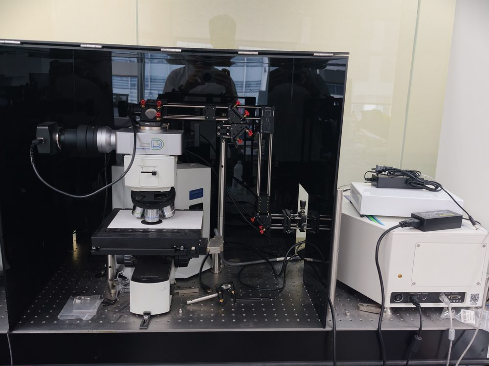
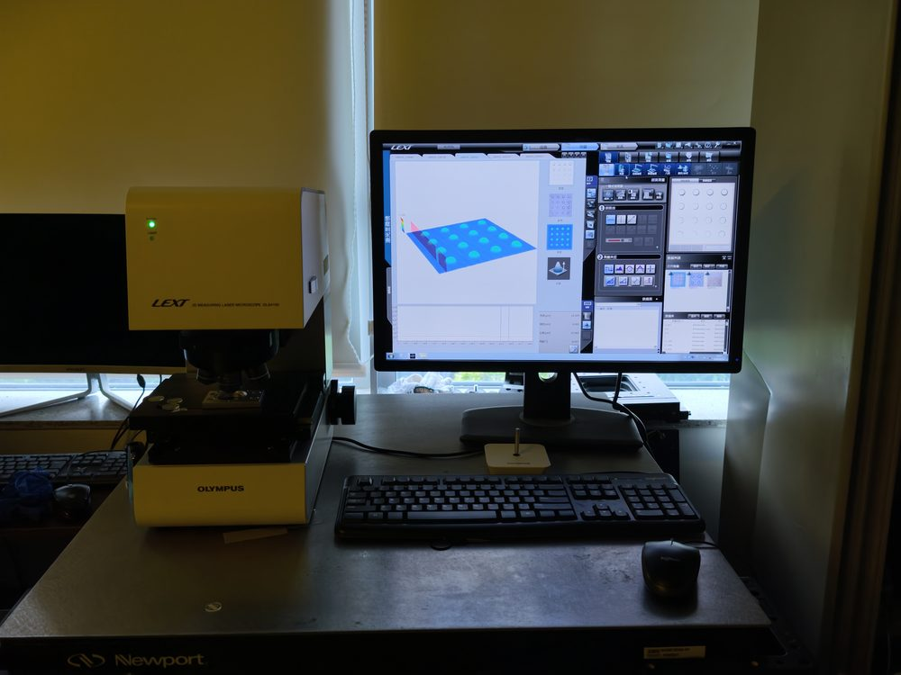
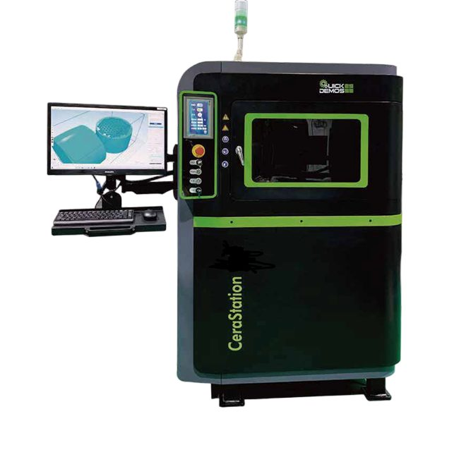
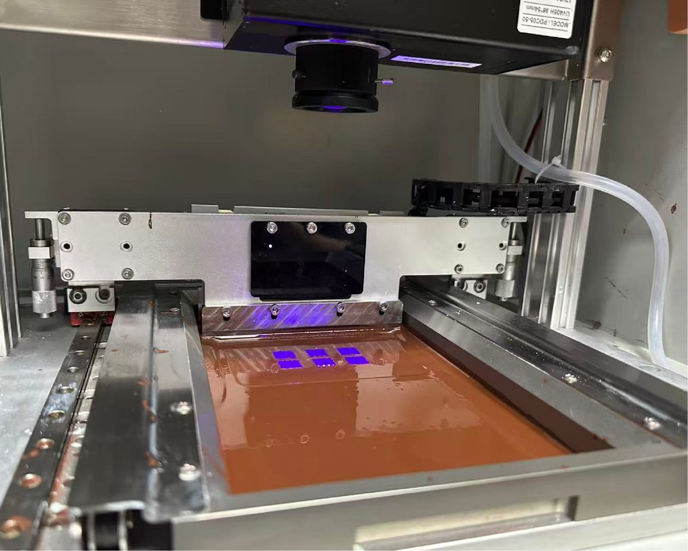

About个人简介
Prof. Wen's research focuses on intelligent manufacturing technologies that integrate advanced materials, precision equipment, optical sensing, robotics, and artificial intelligence. His group designs and builds one-of-a-kind manufacturing systems and functional materials to enable high-precision fabrication, online process monitoring, and closed-loop control for applications in advanced optics, electronics, biomedicine, aerospace, and space manufacturing.
温教授的研究聚焦于智能制造技术，融合先进材料、精密装备、光学传感、机器人与人工智能。其团队设计并搭建独一无二的制造系统与功能材料，实现高精度加工、在线过程监测与闭环控制，应用于先进光学、电子、生物医学、航空航天及太空制造等领域。
Academic appointments学术任职
- Director, PolyU–CSU Joint Research Centre for Space Manufacturing Technology (RCSMT)理大–中科院空间应用工程与技术中心太空制造技术联合研究中心 主任
- Associate Director, University Research Facility in 3D Printing (U3DP)大学 3D 打印研究设施（U3DP）副主任
Contact联系方式
- Office: FJ413, PolyU办公室：香港理工大学 FJ413
- Tel: +852 3400 2473电话：+852 3400 2473
- Email: xw.wen@polyu.edu.hk
Research Interests研究方向
- Intelligent Additive Manufacturing and Digital Manufacturing智能增材制造与数字化制造
- Space Manufacturing, In-orbit Fabrication, and Commercial Space Technologies太空制造、在轨制造与商业航天技术
- Glass Micro/Nano Manufacturing and High-resolution 3D Printing玻璃微纳制造与高分辨率 3D 打印
- Ultrafast Laser Manufacturing and Precision Laser Processing超快激光制造与精密激光加工
- Advanced Optical Metrology, Imaging, Spectroscopy, and Online Process Monitoring先进光学计量、成像、光谱与在线过程监测
- AI-enabled Process Control, Industrial Inspection, and Smart Quality AssuranceAI 驱动的过程控制、工业检测与智能质量保障
- Equipment, Materials, and Manufacturing Technologies for Optics, Electronics, Semiconductors, and Biomedical Devices面向光学、电子、半导体与生物医学器件的装备、材料与制造技术
- Technology Translation, Deep-tech Entrepreneurship, and Advanced Manufacturing Commercialization技术转化、硬科技创业与先进制造产业化
Experience & Education经历与教育
Professional experience工作经历
- Associate Professor长聘副教授The Hong Kong Polytechnic University香港理工大学
- Assistant Professor助理教授Department of Mechanical Engineering, City University of Hong Kong香港城市大学 机械工程学系
- Postdoctoral Fellow博士后研究员Argonne National Laboratory美国阿贡国家实验室
Education教育背景
- Ph.D. in Materials Science博士 · 材料科学Rice University莱斯大学
- M.Sc. in Physics (Optics)硕士 · 物理学（光学）Sun Yat-sen University中山大学
- B.Sc. in Physics (Optics)学士 · 物理学（光学）Sun Yat-sen University中山大学
Selected Publications代表性论文
Selected publications since 2020.2020 年以来的代表性论文。
2026
-
Xu, D., Zhang, Q., Liu, Z., Zhang, J., Li, Q., Zhou, J., & Wen, X.*
Light: Advanced Manufacturing (2026), in press · In press在刊 · Open Access开放获取
-
Modified MXene aerogel with broadband microwave absorption inspired by Melanophila acuminata beetle
Liu, Z., … & Wen, X.*
Advanced Science (2026), in press · In press在刊 · Open Access开放获取
-
Huang, J., Luo, G., Zhang, S., Yuan, Q., Li, P., Wen, X., He, Y., & Su, Z.
Optics & Laser Technology 203, 115716 (2026)
2025
-
Sparse-view irradiation processing volumetric additive manufacturing
Wang, H., Gao, F., Shi, Y., Wang, K., Wei, X., Ma, C., Wen, X.*, Chen, X.*, & Li, J.*
International Journal of Extreme Manufacturing 7(6), 065001 (2025) · Open Access开放获取
-
Yuan, J., Hu, B., Cai, P., Sun, J., Chen, X., Wang, H., Wen, X.*, & Bai, J.*
Additive Manufacturing 114, 105008 (2025)
-
Gao, C., Li, X., Xu, W., Chen, Y., Luo, T., Gao, R., Cui, J., Chu, X., Wen, X.*, & Zhou, W.*
Additive Manufacturing 98, 104644 (2025)
2024
-
One-photon three-dimensional printed fused silica glass with sub-micron features
Li, Z., Jia, Y., Duan, K., Xiao, R., Qiao, J., Liang, S., … & Wen, X.*
Nature Communications 15(1), 2689 (2024) PDF
-
Liang, J.#, Ai, Q.#, Wen, X.#, Tang, X., Zhai, T., Xu, R., … & Lou, J.*
Materials Today 74, 77–84 (2024)
-
3D-printed fused silica glass microlattice as mechanical metamaterial
Li, Z., Jia, Y., Xiao, R., Chen, J., Wu, H., Wen, X.*, & Lu, Y.*
Cell Reports Physical Science 5(9), 102172 (2024) · Open Access开放获取
-
Novel roll-to-plate hot embossing process for the precision manufacturing of glass microstructures
Zhu, Z., Cheung, C. F., Li, K., Wang, C., Ruan, H., Yang, X., Wen, X., & Zhou, T.
Ceramics International 50(21B), 43089–43097 (2024)
2022
-
Wen, X., Wang, W., Zhang, X., Chen, H., Jia, S., Gong, Y., Chen, W., Wang, Y., Zhu, H., Zheng, J., Ajayan, P. M.*, & Lou, J.*
Advanced Optical Materials 10(5), 2100070 (2022)
2021
-
3D-printed silica with nanoscale resolution
Wen, X., Zhang, B., Wang, W., Ye, F., Yue, S., Guo, H., Gao, G., Zhao, Y., Fang, Q., Nguyen, C., Zhang, X., Bao, J., Robinson, J. T.*, Ajayan, P. M.*, & Lou, J.*
Nature Materials 20(11), 1506–1511 (2021) · ESI Highly Cited PaperESI 高被引论文
Highlight: Invented the world’s finest silica glass 3D printing with feature sizes smaller than 180 nm. Featured by Nature Materials: Printing glass in the nano.亮点：发明了目前世界上精度最高的石英玻璃 3D 打印技术，特征尺寸小于 180 nm。该成果获 Nature Materials 专文评述：Printing glass in the nano。
2020
-
Ghost imaging second harmonic generation microscopy
Wen, X., Adhikari, S., Cortes, C. L., Gosztola, D. J., Gray, S. K., & Wiederrecht, G. P.*
Applied Physics Letters 116(19), 191101 (2020)
* Corresponding author · # Equal contribution · Titles link to the publisher via DOI; PDF marks a free full-text copy * 通讯作者 · # 共同第一作者 · 标题经 DOI 跳转至出版商页面；PDF 表示可免费获取全文
Full publication list: Google Scholar · PolyU Scholars Hub. 完整论文列表：Google Scholar · PolyU Scholars Hub。
Research Highlights & Technology Translation科研亮点与技术转化
High-resolution glass 3D printing and glass micro/nano manufacturing高分辨率玻璃 3D 打印与玻璃微纳制造
World-leading fused silica glass 3D printing and micro/nano fabrication for micro-optics, photonics, microfluidics, mechanical metamaterials, biomedical devices, and semiconductor applications.面向微光学、光子学、微流控、力学超材料、生物医学器件与半导体应用，发展国际领先的熔融石英玻璃 3D 打印与微纳加工技术。
Licensed technology — 3D-printed silica glass with sub-micron features技术许可 — 亚微米特征 3D 打印石英玻璃
Inventor of a 3D-printed silica glass technology covered by a licensing agreement registered in May 2025, transferring sub-micron glass printing capability to industry.作为发明人的 3D 打印石英玻璃技术已于 2025 年 5 月完成许可登记，将亚微米玻璃打印能力向产业转移。
Intelligent in-situ laser process monitoring — IntraSpect™智能原位激光过程监测 — IntraSpect™
Intelligent optical sensing and AI-enabled monitoring technology for real-time laser melt pool inspection and quality control in precision welding and advanced manufacturing.面向精密焊接与先进制造的智能光学传感与 AI 监测技术，实现激光熔池实时检测与质量控制。
Space manufacturing and commercial space technologies太空制造与商业航天技术
In-orbit manufacturing, space assembly, lightweight structures, robotic manufacturing, and space optical fibre payloads through the PolyU–CSU Joint Research Centre (RCSMT).依托理大–中科院联合研究中心（RCSMT），开展在轨制造、空间装配、轻量化结构、机器人制造与空间光纤载荷研究。
Cross-border technology transfer and innovation policy service跨境技术转移与创新政策服务
Contribution to regional innovation initiatives and technology transfer platforms, including Su-Gang Li-Zhi, a Jiangsu Province-approved International Cooperation Key Technology Transfer Center under the PolyU Wuxi Research Institute.参与区域创新与技术转移平台建设，包括江苏省认定的国际合作重点技术转移中心「苏港理智」（理大无锡研究院）。
Deep-tech entrepreneurship硬科技创业
Translation of advanced manufacturing research through ventures including IntraSpect Laser Technologies (intelligent laser process monitoring) and G3D (world-leading glass micro/nano manufacturing).通过 IntraSpect Laser Technologies（智能激光过程监测）与 G3D（国际领先玻璃微纳制造）等创业公司，推动先进制造研究成果转化。
Laboratory & Equipment实验室设备
Laser processing, additive manufacturing and optical metrology under one roof — from material forming through to device characterisation.集中配备激光加工、增材制造与光学测量设备，覆盖从材料成形到器件表征的完整流程。









Opportunities招生与科研合作机会
Prof. Wen's group welcomes highly motivated Ph.D. students, postdoctoral fellows, research staff, industrial collaborators, and entrepreneurial partners in areas including intelligent manufacturing, space manufacturing, additive manufacturing, laser processing, optical metrology, nanomanufacturing, robotics, materials science, and technology commercialization.
温教授团队欢迎有志于智能制造、太空制造、增材制造、激光加工、光学计量、纳米制造、机器人、材料科学与技术产业化等方向的高水平博士生、博士后、研究人员、产业合作方与创业伙伴加入。
Open positions在招方向
Micro-/nano-optics & metasurfaces微纳光学与超构表面
Space manufacturing太空制造
How to apply投递方式
Please send your CV and supporting documents as a single PDF to ch-angus.li@polyu.edu.hk, with a copy to lilia.liu@polyu.edu.hk.请将个人简历及相关材料合并为一份 PDF，发送至 ch-angus.li@polyu.edu.hk，并抄送 lilia.liu@polyu.edu.hk。